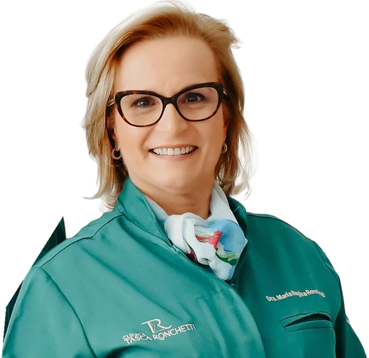
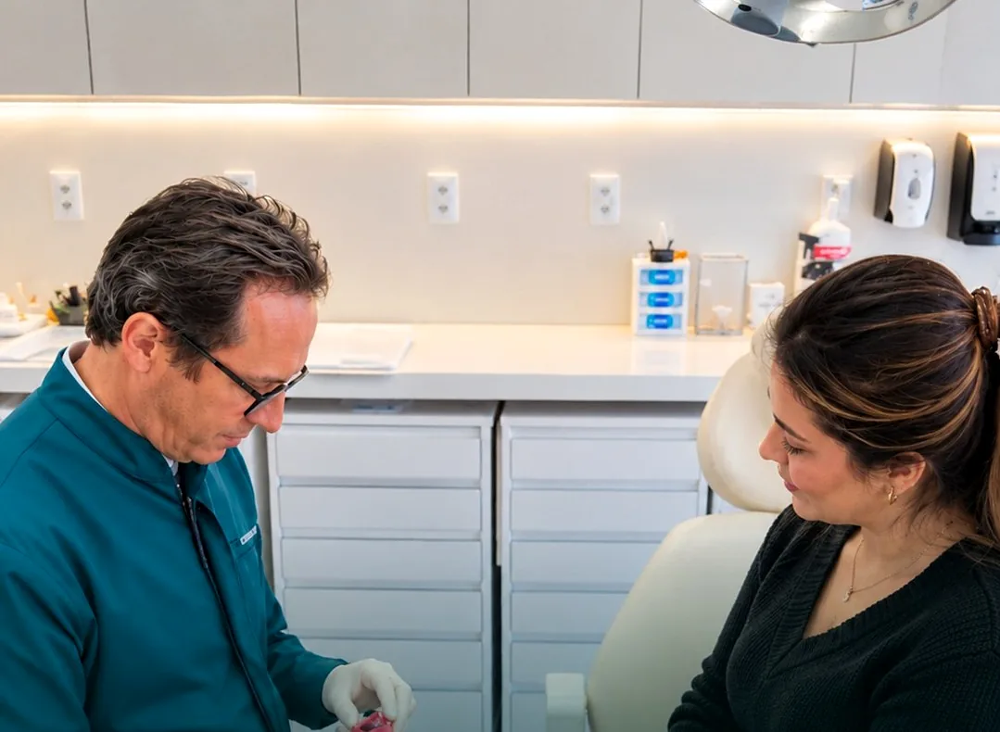
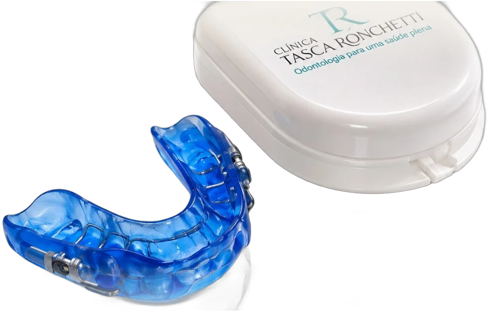
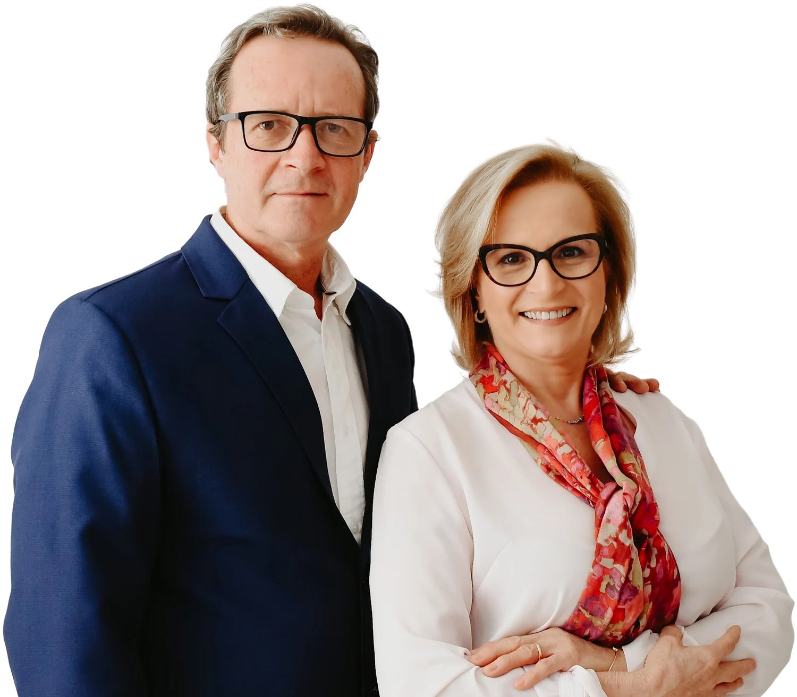

Dr. Giovani RonchettiCirurgião-dentista · CRO/RS 11807
Dra. Maria Regina RonchettiCirurgiã-dentista · CRO/RS 6830
Ronco e apneiaBruxismoSaúde bucal depois dos 60ClareamentoAlinhadores transparentesPrevençãoSala 1003, Jardim do LagoRonco e apneiaBruxismoSaúde bucal depois dos 60ClareamentoAlinhadores transparentesPrevençãoSala 1003, Jardim do Lago
Tratamentos
O que tratamos, e quem responde por cada área.
Cada área tem um dentista responsável. Você sabe, antes de marcar, quem vai atender.

Ronco, apneia e o hábito de ranger os dentes dormindo.
Dra. Maria Regina e Dr. Giovani Ronchetti · CRO/RS 6830 e 11807
Ronco e apneia
Ronco não é normal.
Ele pode ser o primeiro sinal de que a respiração está sendo interrompida durante a noite.


Dr. Giovani Ronchetti · CRO/RS 11807
O aparelho é feito sob medida para a sua arcada.
Durante o sono, ele posiciona a mandíbula levemente para frente. A via aérea fica mais aberta e o ar passa com mais facilidade.
A adaptação costuma ser rápida. Os ajustes são feitos nas consultas de acompanhamento.
Quem atende
Irmãos, sócios e dentistas.
Ronchetti

Dr. Giovani RonchettiCirurgião-dentista · ronco, apneia e bruxismoCRO/RS 11807
São 40 anos de odontologia. Maria Regina e Giovani dividem a clínica desde 2010, e nas avaliações dos pacientes o que mais aparece é o jeito de explicar cada etapa.
Dra. Maria Regina RonchettiCirurgiã-dentista · clínica e pacientes 60+CRO/RS 6830